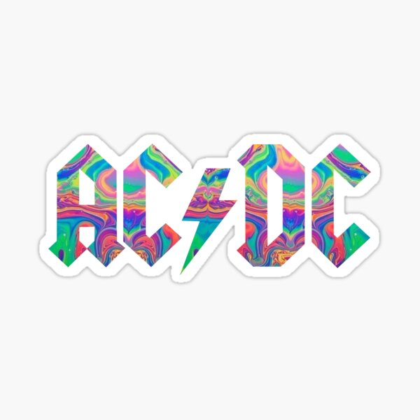

AC/DC
AC/DC (stylized as ACϟDC) are an Australian rock band formed in Sydney in 1973 by Scottish-born brothers Malcolm and Angus Young.Although their music has been variously described as hard rock, blues rock, and heavy metal, the band themselves call it simply "rock and roll".
AC/DC underwent several line-up changes before releasing their first album, High Voltage, in 1975. Membership subsequently stabilised around the Young brothers, singer Bon Scott, drummer Phil Rudd, and bass player Mark Evans. Evans was replaced by Cliff Williams in 1977 for the album Powerage. In February 1980, nearly seven months after the release of the follow-up album Highway to Hell, lead singer and co-songwriter Bon Scott died of acute alcohol poisoning.The group considered disbanding but stayed together, bringing in Brian Johnson as replacement for Scott.Later that year, the band released their first album with Johnson, Back in Black, which they dedicated to Scott's memory. The album launched them to new heights of success and became one of the best selling albums of all time.
The band's next album, For Those About to Rock We Salute You (1981), was their first album to reach number one in the United States. The band fired Phil Rudd as drummer in 1983, and Simon Wright filled his place until quitting in 1989, being in turn replaced by Chris Slade. The band experienced a commercial resurgence in the early 1990s with the release of The Razors Edge. Rudd returned in 1994, contributing to the band's 1995 album Ballbreaker. The band's studio album Black Ice, released in 2008, was the second-highest-selling album of that year, and their biggest chart hit since For Those About to Rock, eventually reaching No.1 on all charts worldwide.
The band's line-up remained the same until 2014 with Malcolm Young's retirement due to early-onset dementia (he later died in 2017) and Rudd's legal troubles. In 2016, Johnson was advised to stop touring due to worsening hearing loss. Guns N' Roses front man Axl Rose stepped in as the band's vocalist for the remainder of that year's dates. Long-term bass player and background vocalist Cliff Williams retired from the band at the end of their 2016 Rock or Bust World Tour and the group has been inactive since then. Nevertheless, they have not officially disbanded and unconfirmed reports of a new album and tour with the surviving Back in Black-era lineup continue to circulate.
AC/DC have sold more than 200 million records worldwide, including 71.5 million albums in the United States, making them the tenth highest-selling artist in the United States and the 14th best selling artist worldwide.Back in Black has sold an estimated 50 million units worldwide, making it the third highest-selling album by any artist, and the highest-selling album by any band. The album has sold 22 million units in the US, where it is the sixth-highest-selling album of all time.AC/DC ranked fourth on VH1's list of the "100 Greatest Artists of Hard Rock" and were named the seventh "Greatest Heavy Metal Band of All Time" by MTV.In 2004, AC/DC ranked No. 72 on the Rolling Stone list of the "100 Greatest Artists of All Time". Producer Rick Rubin, who wrote an essay on the band for the Rolling Stone list, referred to AC/DC as "the greatest rock and roll band of all time".In 2010, VH1 ranked AC/DC number 23 in its list of the "100 Greatest Artists of All Time".